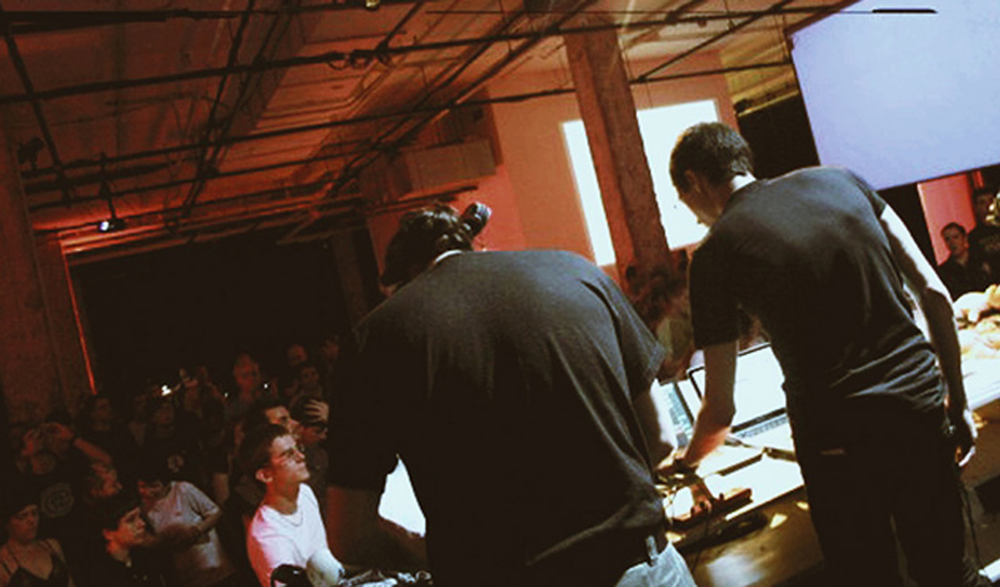
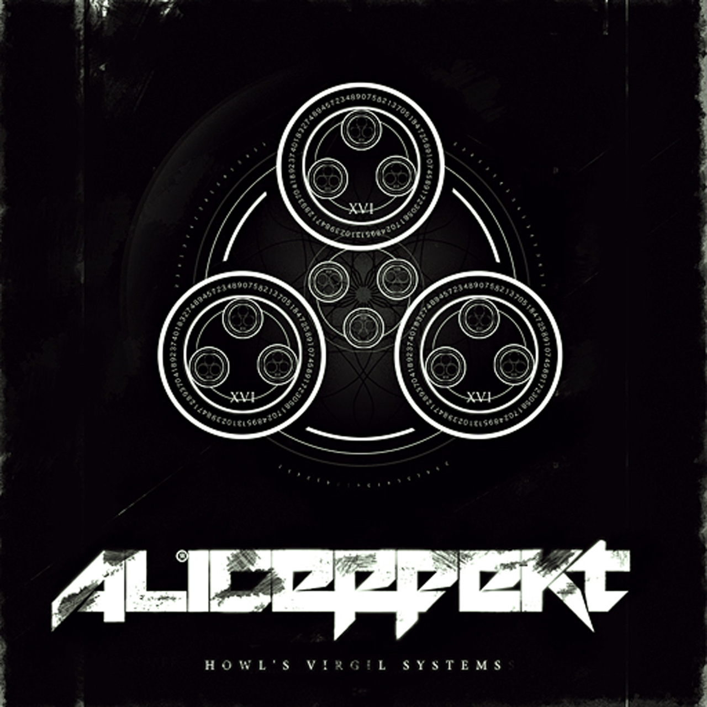
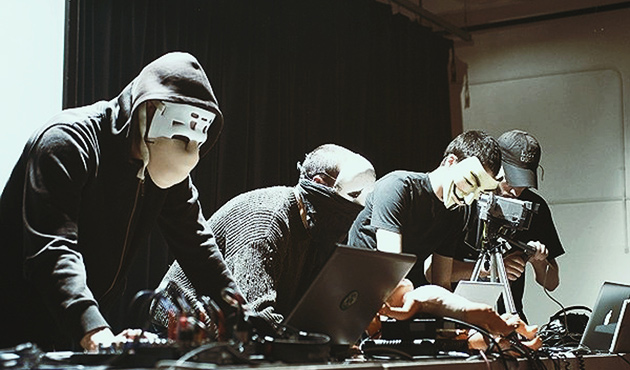
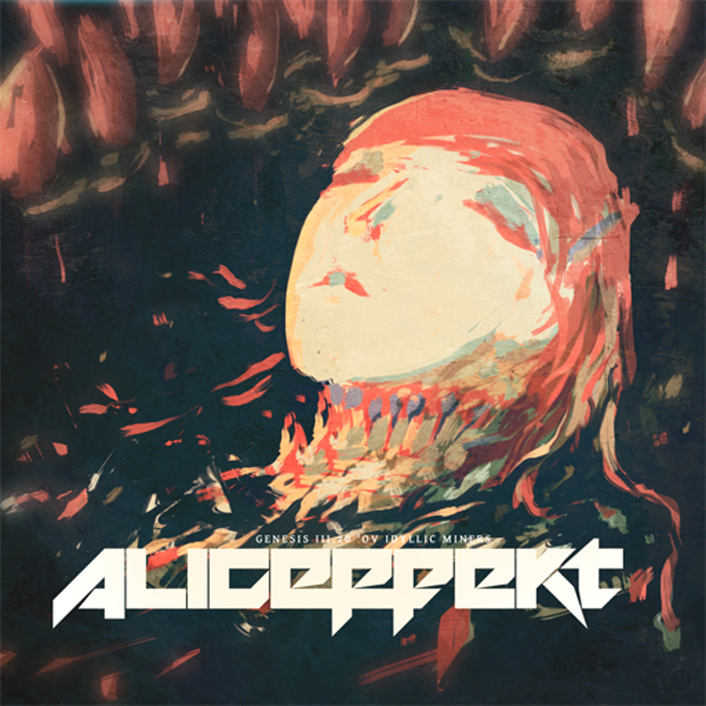
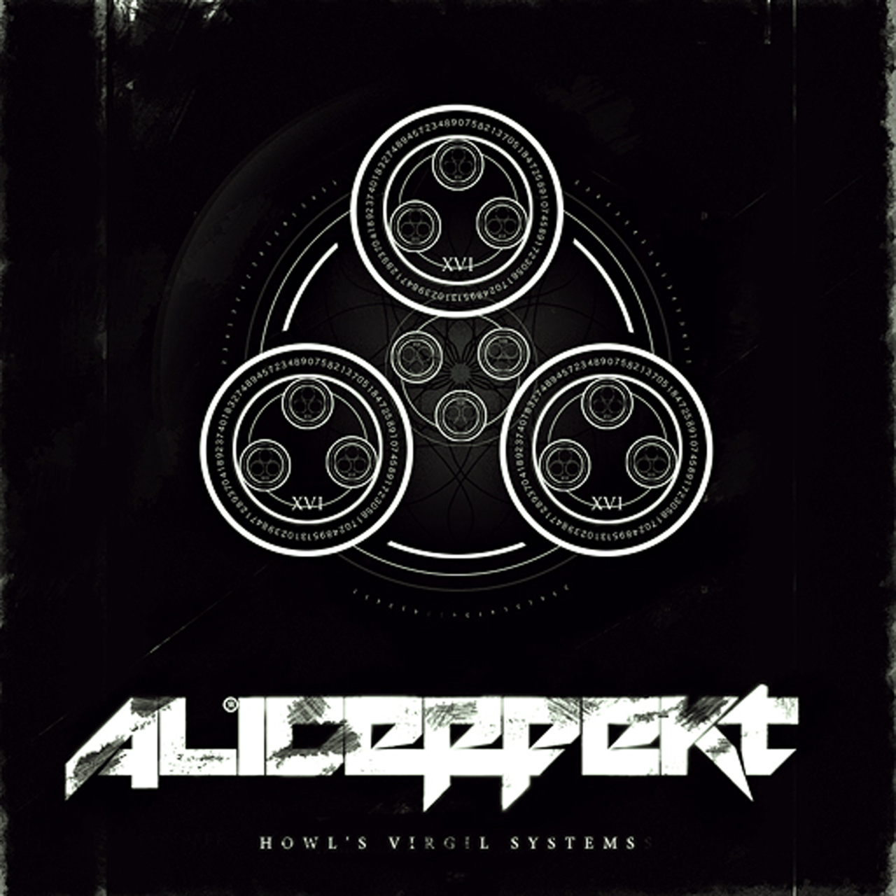
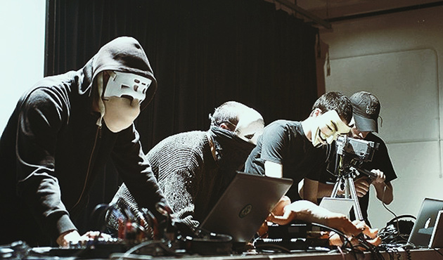
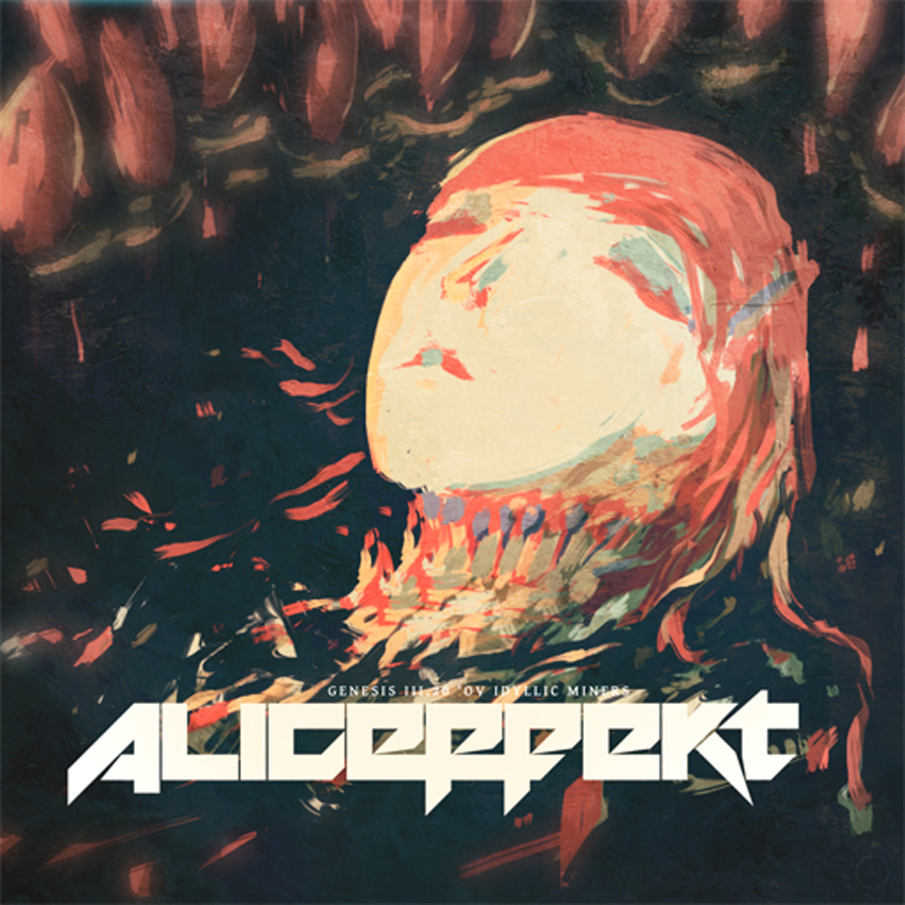

The First Wave contains material mostly unrelated to the Neauismetica and proto-Aliceffekt.
downtemperature — Toy Company, Montreal02S03
 blam — Blam Release05P07
nether esper inserts — Howl Virgil System03J12
otoroutes miniatures — Toy Company, Montreal03D01
idyllic miners — Idyllic Miners Release04J13
blam — Blam Release05P07
nether esper inserts — Howl Virgil System03J12
otoroutes miniatures — Toy Company, Montreal03D01
idyllic miners — Idyllic Miners Release04J13